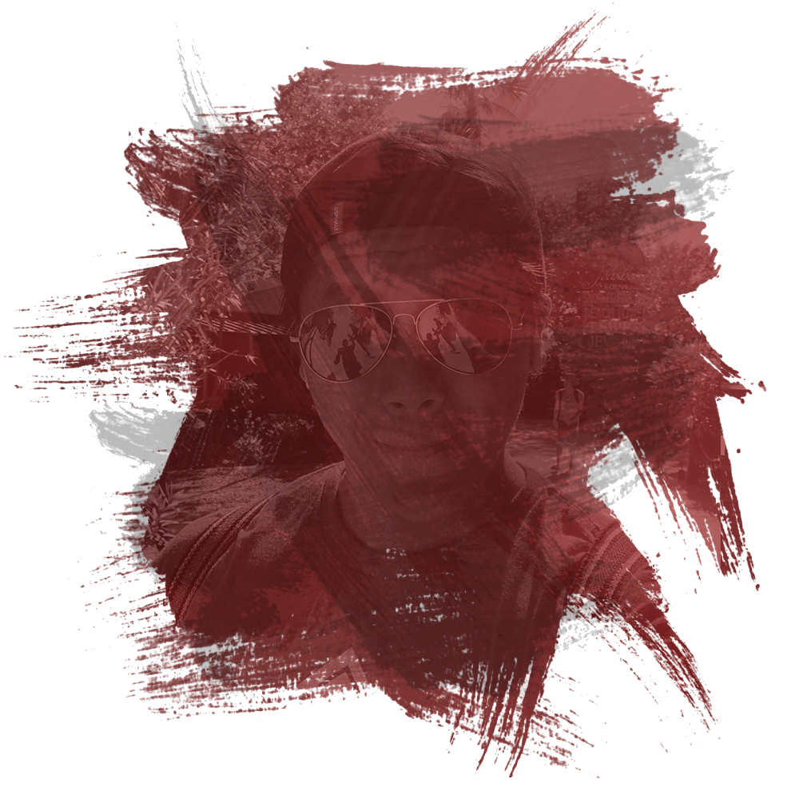

Christian Nguyen
"Consulting Website Developer
& Co-Founder, C&C Studios"

About Me
Hello there! My name is Christian and I’m the developer of this site. I’ve recently left Millard North High School whilst graduating with my regular and IB diplomas in search of higher education. Currently, I’m attending university in the state of California as a second year to major in Biomedical Engineering.
I am an experienced free-lance web developer and graphic designer previously from Nebraska. Always caring for others to succeed in life, I co-founded C&C Studios in Southern California, with my cousin and one of my best mates, to help those who are in need of a platform for artistic exposure. Within the last couple of years, I have been developing an expertise in graphic design whilst advancing my artistic ability in frontend design. Atypical to my current technological repertoire, I plan on pursuing my humanitarian ideals by providing for those who are in need of immediate care through my future studies in the field of medicine.
Web Dev Projects
Digital Artwork
CLSN - ART is my miniature attempt of a digital art museum. It features the best and the most random pieces of digital art put into collections called 'exhibits'. Differing from most projects I've done for digital art, this website contains both digitally edited (from Adobe Photoshop) and pure photography (of an iPhone 8 Plus). I know that some of you who have been looking through my projects and noticed that I do have a photography subdomain, so I guess that here I can tell you that it'll be either repurposed for something else and all of its content will move to this place!

Stay Connected